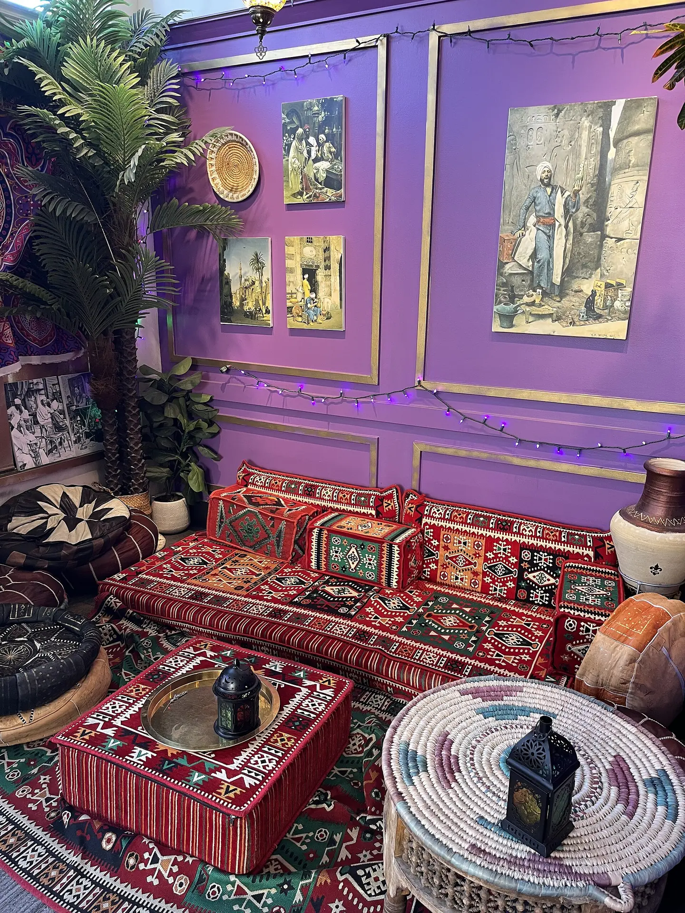
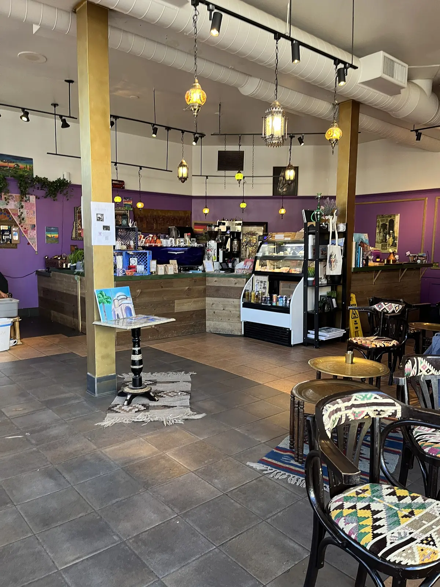
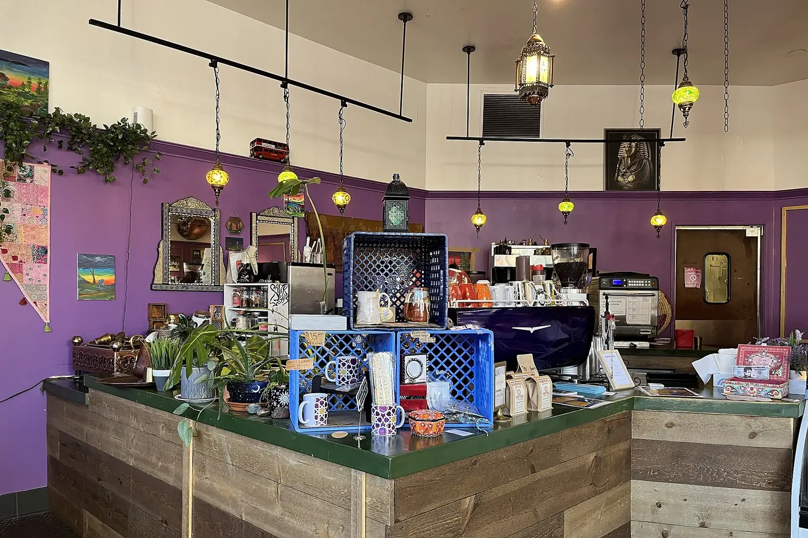
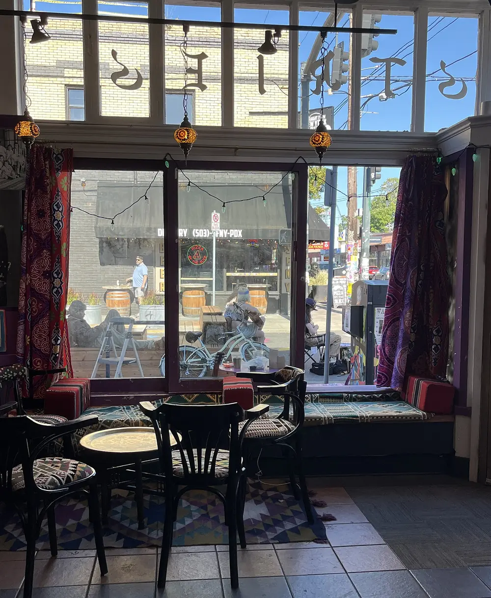
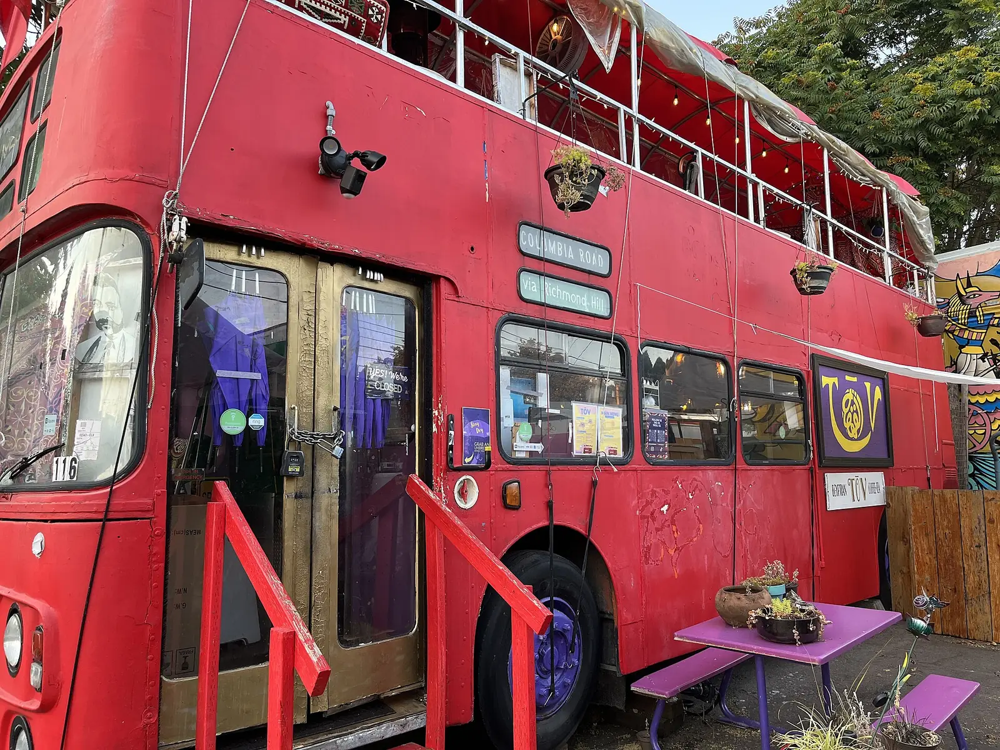
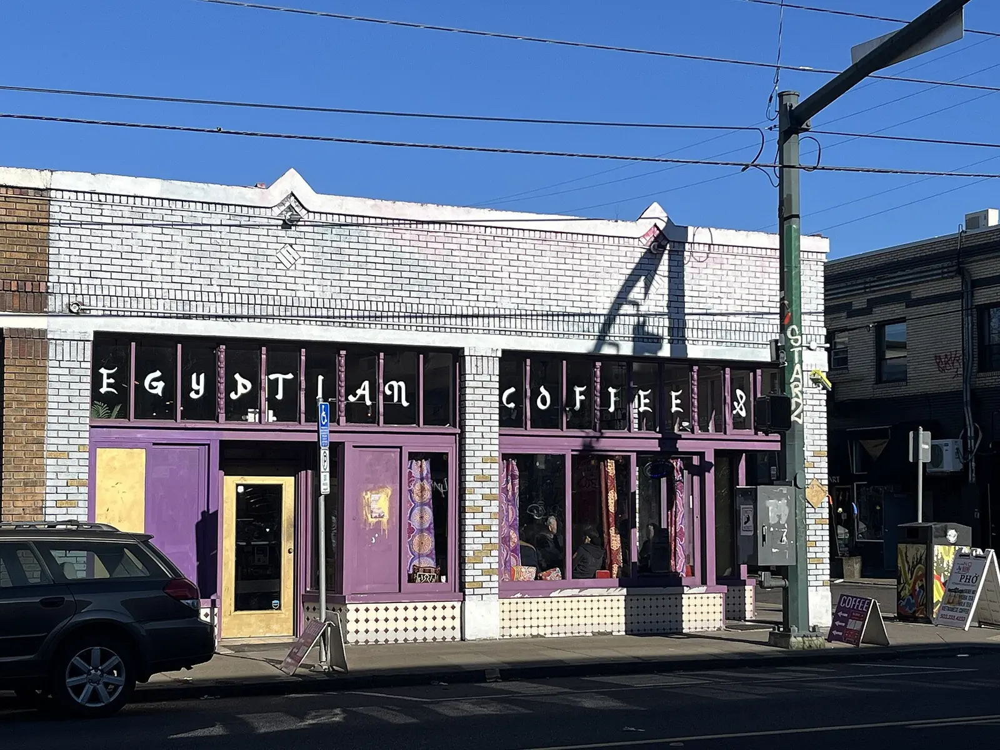

Nectar of the Gods
- Kind
- Latte
- In it
- House-made caramel sauce, cardamom-infused espresso
- Size
- 12 or 16 oz

Cardamom espresso, rose mochas and sahlep on SE Hawthorne, Portland. Since 2015.
Plan a visitThe lounge at Tōv, SE Hawthorne.
“Your simple drip or latte may take up to 20 minutes.”
From Tōv's own menu
Every drink is made by hand, one at a time. So take a cushion.
In a hurry? The menu itself sends you a block east, to Fresh Pot.
Sit on the floor cushions, by the window, or at a café table under the lanterns.




In 2015 Joseph Nazir opened Tōv in a red double-decker on Hawthorne. The artists Rather Severe painted it with a sphinx holding a coffee cup.
In late 2023 Tōv moved indoors, to the shop at 3639.
Open 9:30am to 5pm, closed Wednesdays
Hours: 9:30am to 5pm every day except Wednesday, when it's closed.
Call 541.908.2555. Specials and hours changes go up on Instagram first: @tovcoffee_co.
